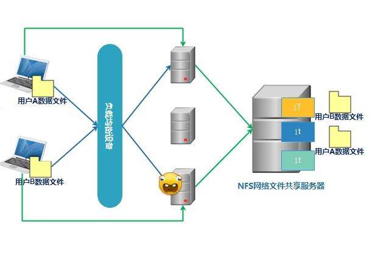

NFS 001基本介绍
一、NFS简介
-
什么是NFS？
(1) NFS是Net File System的简写，即网络文件系统。NFS是由SUN公司开发，并于1984年推出的一个RPC（远程过程调用）服务系统，它使我们能够达到文件的共享，在不同的系统间使用，所以它与通信协议、主机及操作系统无关。当用户想使用远程文件时只要用“mount”命令就可把远程文件系统挂接在自己的文件系统之下，使远程的文件与使用本地计算机上的文件一样。
例如在计算机A上，要把计算机B上的/usr/man挂接到A的/usr/man只需执行如下命令即可：mount B:/usr/man A:/usr/man(2) 用户不但可以mount（挂接）目录，而且可以挂接一个文件。在挂接之后用户只能对文件做读取（或者写入）的操作，而不能在远程计算机上把此文件或目录移动或删除。
(3) NFS至少有两个主要部分：一台服务器和一台（或者更多）客户机。客户机远程访问存放在服务器上的数据。一台计算机也可同时作为NFS服务器和NFS客户机。
-
NFS有什么作用？
(1) 本地工作站使用更少的磁盘空间，因为通常的数据可以存放在一台机器上而且可以通过网络访问到。
(2) 用户不必在每个网络上机器里头都有一个home目录。Home目录可以被放在NFS服务器上并且在网络上处处可用。
(3) 诸如软驱和CDROM之类的存储设备可以在网络上面被别的机器使用。这可以减少整个网络上的可移动介质设备的数量。
NFS（Network File System）即网络文件系统，它允许网络中的计算机之间通过TCP/IP网络共享资源。在NFS的应用中，本地NFS的客户端应用可以透明地读写位于远端NFS服务器上的文件，就像访问本地文件一样。
最早由sun公司开发，是类unix系统间实现磁盘共享的一种方法。
缺点：
- nfs属于本地文件系统，在高并发场景和大存储量下，需要使用分布式存储mfs， FastDFS， tfs(taobao)等。
- 客户端的数据都是通过明文传送。客户端没有用户认证机制，安全性能一般，所以建议一般在局域网内使用。
- 容易发生单点故障，即server服务器宕机所有的客户端都不能访问。
使用场景：web集群中NFS服务器主要用于存储用户上传的信息，方便集群中机器获取用户数据。如图片 附件 头像 视频 音频。

NFS是Network File System的缩写，即网络文件系统。一种使用于分散式文件协定，功能是通过网络让不同的机器、不同的操作系统能够分享个人数据，让应用程序通过网络可以访问位于服务器磁盘中的数据。 NFS在文件传送或信息传送的过过程中，依赖于RPC协议。RPC，远程过程调用（Remote Procedure Call）,是使客户端能够执行其他系统中程序的一种机制。NFS本身是没有提供信息传输的协议和功能的，但NFS却能让我们通过网络进行资料的分享，就是因为NFS使用了RPC提供的传输协议，可以说NFS就是使用PRC的一个程序。
NFS 存储 服务器主要用于用户上传的数据 ，图片 音频 、等信息
NFS服务端、RPC协议、客户端三者可以理解为房源、中介、租客之间的关系：
NFS 适用场景 ；
- NFS 最好是部署在局域网 ，不要在公网上 ；
- NFS 只能在 linux 上使用 （如果想让 windows 和 Linux 之间实现数据共享建议使用 FTP 或者 samba）；3. NFS 适合在中小型企业使用,大型网站不会用 NFS 的，用的都是 分布式存储
二、工作原理
NFS服务依赖于RPC（Remote Procedure Call）服务。nfsd默认端口2049，实际使用过程中因为需要提供不同的服务，因此NFS启动时还会随机调用系统的空闲端口。在centos5.x中默认调用1024以下端口，centos6.x后默认调用的端口号一般较大，30000以上。因为NFS随机端口的原因所以需要RPC服务来和client端确认传输端口等。
因为NFS服务启动时需要向RPC注册端口信息，所以RPC要在NFS服务启动之前启动。

在NFS server上创建用于共享的目录/data，client用mount将/data挂载到自己本地一个目录上，挂载目录可以和/data名称不同。将挂载信息写入本机开机启动文件里 如 /etc/rc.local
客户端无需启动NFS服务，但需要启动RPC服务。
NFS 服务端干的三件事:
NFS 客户端干的三件事:
要部署NFS服务，必须安装下面两个软件包：
nfs-utils：NFS主程序，
rpcbind: PRC主程序；
NFS服务器端和Client端都需要这安装这两个软件。
NFS软件包
nfs-utils: NFS主程序，包含rpc.nfsd rpc.mount两个deamons
rpcbind: RPC主程序
三、基本安装过程
3.1 环境准备，机器3台
CentOS 7.3 ，IP可以自定义，查看系统信息 ；
|
|
| 角色 | IP | 子网掩码 | GW |
|---|---|---|---|
| NFS server | 192.168.1.240 | 255.255.0.0 | 192.168.0.254 |
| NFS client | 192.168.86.131 | 255.255.0.0 | 192.168.0.254 |
| NFS client | 192.168.86.132 | 255.255.0.0 | 192.168.0.254 |
3.2服务端NFS Server安装
-
查看系统是否已经安装nfs,rpcbind
1 2 3[root@server7 ~]# rpm -qa | egrep "nfs|rpcbind" Yum搜寻下安装包是否存在 [root@server7 ~]# yum search nfs-utils rpcbind -
安装NFS和RPC服务
1 2 3 4 5 6 7 8 9[root@server7 ~]# yum install nfs-utils rpcbind [root@server7 ~]# rpm -qa | egrep "nfs|rpcbind" rpcbind-0.2.0-38.el7_3.1.i686 nfs-utils-1.3.0-0.33.el7_3.i686 libnfsidmap-0.25-15.el7.i686 查看这两个软件包在电脑里都安装了什么文件； [root@server7 ~]# rpm -ql nfs-utils -
创建共享目录，授权
创建共享目录,将文件所有者指定为nfsnobody。
nfsnobody用户在安装nfs时会自动创建。
如果不指定共享用户，则nfs系统在分配权限时会以用户uid为主，
客户端如果用root账户会在服务器被自动降级至nfsnobody。1 2 3mkdir -p /data/arfa_nfs chown -R nfsnobody:nfsnobody /data/arfa_nfs chmod 666 /data/arfa_nfs/ -
编辑/etc/hosts.allow
1 2 3 4增加如下内容： all:127.0.0.1 rpcbind: ALL :allow mountd: ALL :allow -
编辑/etc/netconfig
1注释掉 udp6,tcp6行 -
编辑配置文件/etc/exports vim /etc/exports 写入以下内容
1 2 3/data1/arfa_nfs 192.168.0.0/16(rw,sync) /data1/hulk_nfs 192.168.86.131(rw,sync) /data1/share 192.168.1.0/24(rw,sync,all_squash,anonuid=2000,anongid=2000)注意红色部分不能有空格！！生产环境中常用的一种配置，适合多客户端共享一个NFS目录。
All_squash 也就是说不管客户端是以什么样的身份来进行访问的，都会被压缩成为all_squash后面所接的用户和群组身份。这边用anonuid、anongid编号来标示
格式：共享目录 指定共享对象(共享参数)
例： /data 192.168.1.0/24(rw,sync)
将 /data 共享给192.168.1.x ，客户端权限rw
其中共享对象可以用通配符，比如 * 代表所有地址。
配置参数：
rw：读写
ro：只读
sync：将数据同步写入内存缓冲区与磁盘中，效率低，但可以保证数据的一致性；
async：是大数据时使用，是先写到缓存区，必要时再写到磁盘里。
all_squash：所有访问用户都映射为匿名用户或用户组；
no_all_squash（默认）：访问用户先与本机用户匹配，匹配失败后再映射为匿名用户或用户组；
root_squash（默认）：将来访的root用户映射为匿名用户或用户组；
no_root_squash：来访的root用户保持root帐号权限；
wdelay（默认）：检查是否有相关的写操作，如果有则将这些写操作一起执行，这样可以提高效率；
no_wdelay：若有写操作则立即执行，应与sync配合使用；
subtree_check：若输出目录是一个子目录，则nfs服务器将检查其父目录的权限；
no_subtree_check（默认）：即使输出目录是一个子目录，nfs服务器也不检查其父目录的权限，这样可以提高效率；
anonuid： anonuid就是匿名的uid和gid。说明客户端以什么权限来访问服务端，在默认情况下是nfsnobody。Uid65534.
anongid： 同anongid，就是把uid换成gid而已 -
让配置文件生效
1exportfs -arv -
编辑/etc/sysconfig/nfs(该文件用以固定NFS服务端口)
RQUOTAD_PORT=30001 LOCKD_TCPPORT=30002 LOCKD_UDPPORT=30002 MOUNTD_PORT=30003 STATD_PORT=30004 -
启动NFS服务
1 2 3 4 5 6 7 8 9 10 11 12 13 14 15 16 17 18 19 20 21 22 23 24 25 26 27 28 29 30 31 32 33 34 35 36 37 38 39 40 41 42 43 44 45 46 47 48 49 50 51 52 53 54启动NFS服务之前先启动rpcbind服务 查看rcpbind状态: [root@server7 ~]# systemctl status rpcbind rpcbind安装成功后默认已经开启，并且为开机自动启动。如果没有启动的话，我们来重新启动rcpbind服务 [root@server7 ~]# systemctl restart rpcbind 查看PRC端口 [root@server7 ~]# yum install net-tools lsof [root@server7 ~]# lsof -i:111 查看rpcbind相关服务和端口 [root@server7 ~]# netstat -tlunp |grep rpcbind 未启动NFS之前查看NFS服务向PRC注册的端口信息 查看 RPC 服务的注册状况 [root@server7 ~]# rpcinfo -p localhost RPC服务启动后再启动NFS服务 查看状态 [root@server7 ~]# systemctl status nfs 默认未启动，系统开机重启后不启动，启动nfs服务。 [root@server7 ~]# systemctl start nfs 将nfs服务设置为开机启动 [root@server7 ~]# systemctl enable nfs 查看nfs服务状态 [root@server7 ~]# systemctl status nfs 启动NFS后我们再次查看rpc注册的端口信息 [root@server7 ~]# rpcinfo -p localhost 在确认启动没用问题后我们看一看NFS到底开了哪些端口 [root@server7 ~]# netstat -tulnp |grep -E '(rpc|nfs)' NFS常见进程详解 [root@server7 ~]# ps -ef |egrep "rpc|nfs“ rpc 3584 1 0 10:03 ? 00:00:00 /sbin/rpcbind -w rpcuser 3634 1 0 10:15 ? 00:00:00 /usr/sbin/rpc.statd --no-notify root 3637 2 0 10:15 ? 00:00:00 [rpciod] root 3642 1 0 10:15 ? 00:00:00 /usr/sbin/rpc.mountd root 3652 1 0 10:15 ? 00:00:00 /usr/sbin/rpc.idmapd root 3657 2 0 10:15 ? 00:00:00 [nfsd4_callbacks] root 3663 2 0 10:15 ? 00:00:00 [nfsd] root 3664 2 0 10:15 ? 00:00:00 [nfsd] root 3665 2 0 10:15 ? 00:00:00 [nfsd] root 3666 2 0 10:15 ? 00:00:00 [nfsd] root 3667 2 0 10:15 ? 00:00:00 [nfsd] root 3668 2 0 10:15 ? 00:00:00 [nfsd] root 3669 2 0 10:15 ? 00:00:00 [nfsd] root 3670 2 0 10:15 ? 00:00:00 [nfsd] root 3705 3267 0 10:23 pts/0 00:00:00 grep -E --color=auto rpc|nfs nfsd： 最主要的NFS服务提供程序，这个daemon主要的功能就是管理客户端是否能够使用服务器文件系统挂载信息，其中还包含判断这个登录用户的ID。 rpc.mountd： 这个daemon主要功能则是管理NFS的文件系统。当client端顺利通过rpc.nfsd登入主机后，在它可以使用NFS服务器提供规定文件之前，还会经过文件使用权限的认证程序。它会去读取NFS的配置 文件/etc/exports来对比客户端的权限，当通过这一关之后，client端也就取得使用NFS文件的权限。 rpc.lockd (非必要)： 这个daemon用于管理文件的锁定方面，当多个客户端同时尝试写入某个文件时就可以对该文件造成一些问题。rpc.lockd则可以用来克服这此问题。但rpc.lockd必须要同时在客户端和服务器端都开 启才行。 rpc.statd(非必要)：这个daemon可以用来检查文件的一致性，若发生因为客户端同时使用同一个文件造成文件损坏时，rpc.statd可以用来检测并尝试恢复该文件 查看nfs开启的rpc端口 [root@server7 ~]# rpcinfo -p | grep -E '(rquota|mount|nlock)' -
本机测试， 显示挂载信息
1 2 3 4 5 6 7查询nfs挂载，showmount -e 192.168.1.240 后面可以接ip来查看。 [root@localhost data]# showmount -e Export list for localhost: /data/nfs 192.168.1.0/24,192.168.86.131 NFS服务开启后，查看共享目录参数 [root@localhost data]# cat /var/lib/nfs/etab -
配置防火墙，对外开放NFS服务
1 2 3 4 5 6 7 8 9 10 11 12 13 14 15 16 17 18 19iptables -A INPUT -p tcp --dport 111 -j ACCEPT iptables -A INPUT -p udp --dport 111 -j ACCEPT iptables -A INPUT -p tcp --dport 2049 -j ACCEPT iptables -A INPUT -p udp --dport 2049 -j ACCEPT iptables -A INPUT -p tcp --dport 30000:30010 -j ACCEPT iptables -A INPUT -p udp --dport 30000:30010 -j ACCEPT 修改配置文件 -A RH-Firewall-1-INPUT -s 10.33.0.0/16 -p tcp -m tcp --dport 111 -j ACCEPT -A RH-Firewall-1-INPUT -s 10.33.0.0/16 -p udp -m udp --dport 111 -j ACCEPT -A RH-Firewall-1-INPUT -s 10.33.0.0/16 -p tcp -m tcp --dport 2049 -j ACCEPT -A RH-Firewall-1-INPUT -s 10.33.0.0/16 -p udp -m udp --dport 2049 -j ACCEPT -A RH-Firewall-1-INPUT -s 10.33.0.0/16 -p tcp -m tcp --dport 30001 -j ACCEPT -A RH-Firewall-1-INPUT -s 10.33.0.0/16 -p udp -m udp --dport 30001 -j ACCEPT -A RH-Firewall-1-INPUT -s 10.33.0.0/16 -p tcp -m tcp --dport 30002 -j ACCEPT -A RH-Firewall-1-INPUT -s 10.33.0.0/16 -p udp -m udp --dport 30002 -j ACCEPT -A RH-Firewall-1-INPUT -s 10.33.0.0/16 -p tcp -m tcp --dport 30003 -j ACCEPT -A RH-Firewall-1-INPUT -s 10.33.0.0/16 -p udp -m udp --dport 30003 -j ACCEPT -A RH-Firewall-1-INPUT -s 10.33.0.0/16 -p tcp -m tcp --dport 30004 -j ACCEPT -A RH-Firewall-1-INPUT -s 10.33.0.0/16 -p udp -m udp --dport 30004 -j ACCEPT
3.3 客户端安装过程
|
|
一般不将nfs挂载信息写入fstab，因为nfs依赖于rpc服务，rpc服务启动晚于fstab时会出错。
可以将挂载信息写入 /etc/rc.local
|
|
|
|
关于默认账户
nfs客户端写数据除了nfs配置文件要有rw权限，对于目录也要有对应操作权限。
如果/data/nfs目录没有给写入权限，即使exports里设置了rw也是没有权限写入的。客户端默认操作账户为nfsnobody。
|
|
查看/var/lib/nfs/etab其中 anonuid=65534,anongid=65534 为默认账户uid，即nfsnobody的默认uid。 查看已挂载设备挂载参数 cat /proc/mounts
|
|
客户端挂载优化参数
- noatime 不更新文件的inode访问时间戳，文件很多时此参数可以提高效率。
- nodiratime 不更新目录的访问时间戳，同上。
- nosuid 关闭挂载目录的suid
- noexec 不允许执行二进制文件。shell脚本无法直接使用，但是用sh xxx.sh依然可以调用。
- rsize 系统每次读取的最大字节，centos6.5默认131072，此参数过小会影响系统的I/O效率.
- wsize 系统每次写入的最大字节，同上
- defaults 使用默认的选项。默认选项为rw、suid、dev、exec、anto nouser与async。
|
|